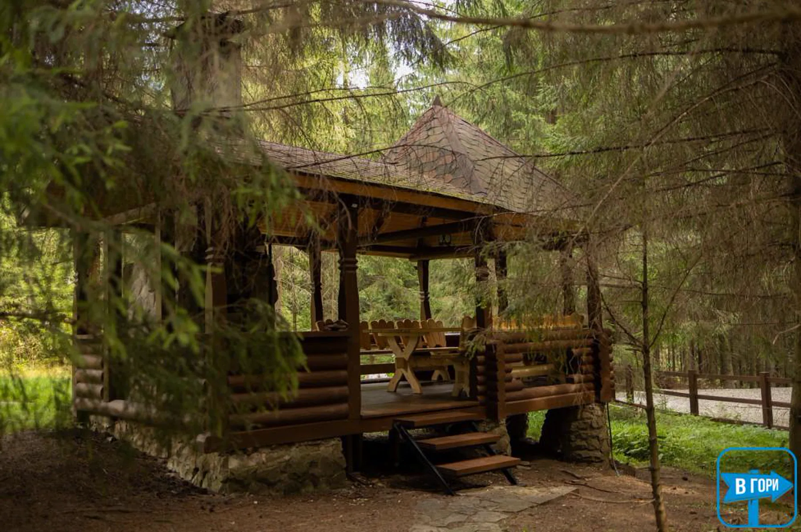

котеджі біля Буковеля —
за десять хвилин
П'ять кілометрів від нижньої станції витягів: дерев'яні оселі серед смерек, басейн із підігрівом, лазня та власний паркінг.
Буковель — найбільший гірськолижний курорт України, і щозими навколо нього бронюють усе, що має дах. Ми пропонуємо інший ритм: жити за п'ять кілометрів від нижньої станції, у селі Поляниця, серед смерек, і приїжджати на схил тоді, коли хочеться — без черг на паркінгу й шуму під вікнами.
«Біля Буковеля» не означає «в натовпі». Іноді достатньо десяти хвилин дороги, щоб вечір став тихим.
Чому котеджі біля Буковеля,
а не в самому курорті
- Тихіше. Маєток стоїть на схилі над Поляницею, на закритій території. Уночі чути вітер у смереках, а не музику з сусіднього комплексу.
- Вільніше з машиною. Паркінг у дворі безкоштовний і не залежить від того, чи встигли ви до відкриття витягів.
- Дешевше за площу. За ціну одного номера в Буковелі тут часто можна взяти цілу оселю з кухнею та вітальнею.
- Своя кухня. Сніданок не прив'язаний до годин ресторану, а вечеря після схилу не потребує бронювання столика.
Наші котеджі і шале
Чотири оселі на одній території — від компактного котеджу на два номери до шале на шість спалень. Усі з власними кухнями, санвузлами та терасами; у преміум-оселі є джакузі, у шале й триповерховому будинку — камін.
| Оселя | Гостей | Ціна за ніч |
|---|---|---|
| Триповерховий будинок 6 номерів · 12–14 гостей | до 14 | від 14 000 ₴ |
| Котедж на два номери 2 номери · до 8 гостей | до 8 | від 5 000 ₴ |
| Шале на шість спалень 6 спалень · 12–13 гостей | до 13 | від 16 000 ₴ |
| Преміум-котедж 3 спальні · 6–7 гостей | до 7 | від 12 000 ₴ |
Ціни вказані за ніч у низький сезон. На свята, шкільні канікули та в розпал зимового сезону вартість вища — актуальну суму підтверджуємо під час бронювання. Детальніше про кожну оселю.
Зима: схили, камін і гаряча вода
Зимою маєток працює як база відпочинку: уранці — десять хвилин до витягів, удень — схили, увечері — лазня, басейн або камін. Для тих, хто катається не щодня, поруч є снігоступні маршрути на Хом'як і спокійні прогулянки лісом.
Радимо бронювати зимові дати заздалегідь: період між Різдвом і серединою січня, а також лютневі вихідні розбирають найшвидше. Якщо плануєте приїхати великою компанією, напишіть за два-три місяці — так більше шансів узяти весь маєток.
Літо біля Буковеля
Улітку Буковель — це не лише схили: підйомники працюють для прогулянок, навколо багато веломаршрутів і стежок, а в лісі — ягоди та гриби. Після активної днини приємно повернутися до басейну з підігрівом і вечері в альтанці.
Дорога, паркінг і трансфер
Маєток розташований за адресою: вул. Прохідний, 192, Поляниця. Координати: 48.349078, 24.474176. До нижньої станції витягів — 5 км, до центру Поляниці — 2,5 км, до Яремче — 35 км.
| Напрямок | Відстань | У дорозі |
|---|---|---|
| Буковель, нижня станція витягів | 5 км | ≈ 10 хв |
| Центр Поляниці | 2,5 км | ≈ 6 хв |
| Гора Хом'як | поруч | пішки |
| Траса Львів — Рахів — Мукачеве | 5 км | ≈ 8 хв |
| Яремче, водоспад Пробій | 35 км | ≈ 45 хв |
Трансфер до витягів і назад — за домовленістю, повідомте час і кількість гостей. Паркінг на території безкоштовний, територія закрита та під відеонаглядом.
Як забронювати
Заселення — з 14:00, виїзд — до 11:00. Бронювання підтверджуємо після передоплати. Напишіть дати, кількість гостей і бажану оселю — відповімо протягом дня, запропонуємо розселення та надішлемо умови скасування.
Порівняти формати можна на сторінках відпочинок у Поляниці та оренда шале в Карпатах.
питання про відпочинок біля Буковеля
Скільки їхати від маєтку до витягів Буковеля?
Близько 5 км, приблизно 10 хвилин автомобілем до нижньої станції. Дорога розчищена взимку; трансфер до витягів і назад організовуємо за домовленістю.
Чи є де залишити машину біля Буковеля?
У маєтку — безкоштовний паркінг на закритій території. Біля витягів паркінг платний і в сезон швидко заповнюється, тому багато гостей залишають авто тут і їдуть трансфером.
Чи можна приїхати на один-два дні?
Можливо, якщо оселя вільна. У високий сезон та на свята діють окремі умови й мінімальний термін — уточнюйте під час запиту, ми одразу скажемо, що доступно.
Що є в котеджі для зимового відпочинку?
Опалення, камін у шале та триповерховому будинку, кухня з усім посудом, сушка одягу за домовленістю, лазня й басейн із підігрівом на території. Після схилу є де зігрітися.
Чи підходить маєток для лижного тижня компанії?
Так. Шале на шість спалень і триповерховий будинок добре підходять для компанії 12–14 осіб, а весь маєток вміщає до 42 гостей. Для великих груп складаємо окрему пропозицію.
07 бронювання
зимові дати
розбирають швидко
Напишіть бажані дати та кількість гостей. Підкажемо, яка оселя вільна, і забронюємо трансфер до витягів.
ваша заявка готова